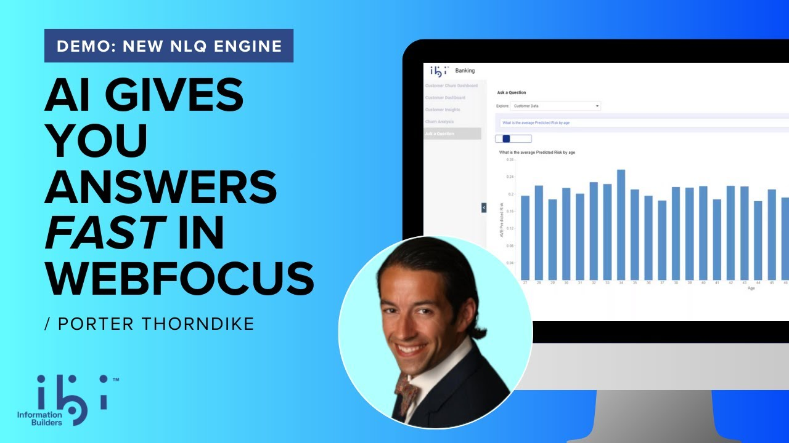
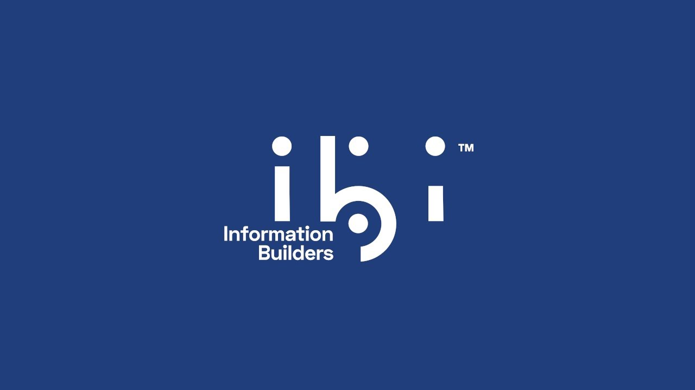
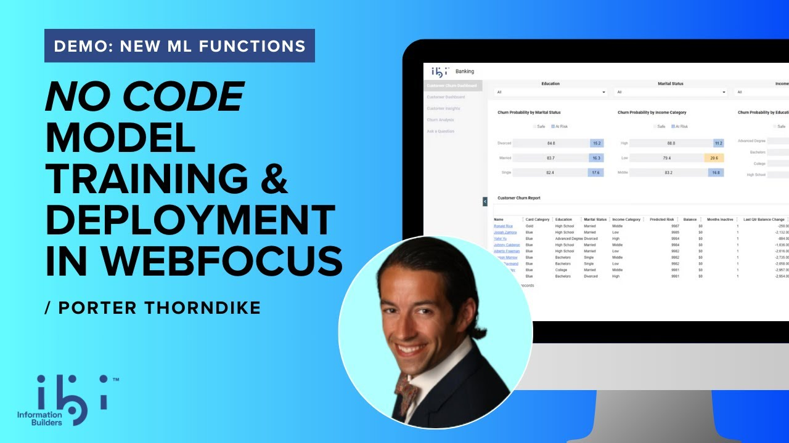

Quick Impact Overview
Leadership Summary: NLQ, Insights, and ML — three workflows, one owner. Took this from a roadmap concept to shipped architecture, then enabled two designers to build on the foundation.
What The System Was: WebFOCUS had three powerful data science features — NLQ (ask questions in plain English), Insights (auto-generated visualizations), and ML (predictive model training). All shipping, none legacy. But they were invisible — buried in different menus with different entry points. Users didn't know they existed.
My Role: End-to-end ownership: made all three workflows responsive, established consistent interaction patterns, and unified them into a single discoverable hub.
STAR Summary
Situation: Three powerful data science features existed but were scattered across the platform. Different entry points, different patterns, low adoption. Users didn't know they were there.
Task: Unify them into one discoverable experience. Make data science accessible without hiding it.
Action: Defined the architecture and base screens for all three. Established consistent interaction patterns and made everything responsive.
Result: Integrated three features into the Hub — no extra space, everything inside. NLQ and Insights live in production. DSML Hub shipping 2027.
Key Achievements
- 3 entry points → 1 unified DSML Hub
- 3 workflows owned simultaneously
- Consistent interaction patterns across all features
- From annual roadmap concept → shipped architecture
- Enabled 2 designers with architecture and base screens
- NLQ + Insights live in 9.3.6. DSML Hub shipping 2027
UX Principles Applied
- Unified Entry Point
- Progressive Disclosure
- Cognitive Offloading
- One Click Away
- Responsive First
- Contextual Help
Validation & External Links
Discover Deeply: From Roadmap Concept to Strategic Definition
Summary: Three powerful features existed — but nobody could find them. Customer feedback confirmed: visibility was the problem.
The Foundation: NLQ & Insights
Before the Hub, I owned these workflows individually. They were powerful but hidden.
Workflows Owned
-
Natural Language Query (NLQ)
Ask questions in plain English, get instant visualizations. I designed the empty states, error handling, and results display from scratch.
-
Automated Insights
One-click statistical analysis. I owned the full visual system, including the custom color palette for data visualization.
// PATTERN_PARITY: The same empty states, data selection flow, and error handling I built for these individual tools became the "system" for the DSML Hub.
The Discovery: They weren't visible. NLQ was buried in Explore Data. Insights was hidden in a submenu. ML lived in a completely separate context.
Empathize with the Ecosystem: Bridging the Gap Between Personas
Summary: Data scientists needed depth. Business users needed simplicity. One entry point had to serve both.
Full Detail
User Personas
Needs direct model parameter access and keyboard-first navigation.
Needs one-click insight generation and plain-language explanations.
Needs consistent component behavior and debuggable error states.
Needs self-service workflows and shareable, repeatable queries.
The Insight: They had completely different mental models — but we needed one entry point for both. The solution was layered progressive disclosure: simple on the surface, powerful underneath.
Simplify the Chaos: Mapping and Unifying the System
Summary: Integrated three scattered entry points into the Hub. Already owned all three — integration felt natural.
Architectural Unification: From Silos to Platform
// SYSTEM_CONVERGENCE
Three fragmented tools converged into one unified architecture.
(Isolated Codebase)
(Separate Entry)
(Different Shell)
WebFOCUS DSML Hub
One Plugin. One Mental Model. Four Capabilities (NLQ, Insights, Predict, Discover). Zero Context Switching.
Why integration was natural
I already owned all three features. NLQ, Insights, and ML were mine. When the DSML Hub opportunity came, the hard work was already done — I understood every workflow, every edge case, every user pain point.
Iterate with Inclusion: The Evolution of a Unified Hub
Summary: Same features, transformed experience. Three separate tools became one cohesive hub.
Full Detail
Project Timeline
From strategic definition to engineering handoff — four phases that transformed IQ from concept to platform.
Transitioned from ML Functions to lead the broader DSML strategy. Framed IQ not as a set of features, but as the unified "Operating System" for analytics.
Designed the "Hub-First" model, unifying Discover, NLQ, and Predict into a single extensible plugin architecture. Replaced 3 fragmented entry points with 1 cohesive "Front Door".
Aligned 3 distinct Product Managers and the Principal Data Scientist around a shared UI pattern, moving the org from "Feature Teams" to "Platform Thinking".
Delivered high-fidelity specs and the unified design system. The IQ Plugin is now the official "North Star" for the WebFOCUS roadmap, currently in active engineering for the 2026 cycle.
The transformation wasn't about changing features — it was about changing how users find and access them.
Before: Three separate entry points, three different mental models, three chances for users to give up.
After: One DSML Hub, consistent patterns, one learning curve.
Design Evolution: From Concept to Production


Grow Through Constraints: Strategic Ownership at Scale
Summary: Fought for features, lost some battles. Built within constraints, enabled two designers to continue.
Full Detail
What got rejected: A lot. I fought for a navigation bar in IQ — eventually won. Built a "Get Started" panel that got scrapped after significant effort (we integrated it better elsewhere). Pushed for more IQ features on the Hub homepage — rejected due to engineering resources.
The Hub ecosystem constraint became an advantage: familiar patterns meant faster development and easier adoption. After establishing the architecture and base screens, I handed off to two designers (one junior, one senior). They executed confidently because the foundation was clear.
What I'd do differently: I wanted to add proper tutorials and onboarding flows — never got full green light. I envisioned NLQ as a chat interface for WebFOCUS itself (step-by-step workflow guidance), and I wanted to connect ReportCaster and IQ (schedule generated insights automatically). These remain opportunities for the platform.
Navigate Forward: Adoption, Impact, and Future
Summary: NLQ adoption +25%. Insights live. DSML Hub shipping 2027.
Full Detail
What's live now (9.3.6):
- NLQ with +25% adoption increase
- Insights with auto-generated visualizations
What's shipping:
- ML Functions redesign → 2026
- Unified DSML Hub → 2027
The +25% NLQ adoption increase came from making the feature discoverable — not from changing the feature itself. Visibility was the problem. Visibility was the solution.
Transformation in Motion
See the transformation unfold in real-time. Compare the three existing workflows with the new unified DSML Hub design.
Before: Disconnected Entry Points
NLQ (Natural Language Query)

Standalone NLQ workflow in Explore Data — separate entry point, different mental model.
Automated Insights

Standalone Automated Insights workflow — another separate entry point with its own interface.
ML Functions

ML Functions from Reporting Server — redesigned with unified patterns.
After: Unified DSML Hub

The new unified DSML Hub: all three DSML capabilities consolidated into one cohesive entry point.
Design System & Component Library
Shared Architecture: A unified design system used across all three case studies to ensure consistency and speed.